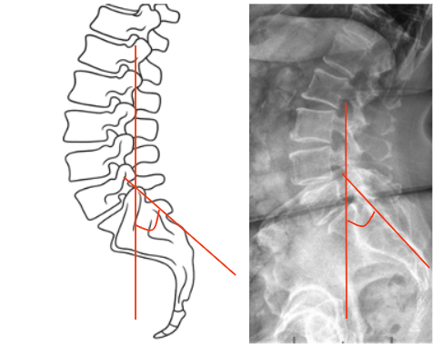

1) Description of Measurement
Boxall’s Angle, also known as the Sacral Inclination Angle, is a radiographic parameter used to assess sacral orientation relative to the vertical axis of the body. It quantifies the anterior tilt of the sacrum, serving as an indirect measure of lumbosacral alignment and pelvic posture.
This measurement is especially useful in evaluating spondylolisthesis, sagittal imbalance, and pelvic compensation. An increased Boxall’s Angle indicates a more anteriorly inclined sacrum and, consequently, greater lumbar lordosis and shear stress across the lumbosacral junction. A reduced angle corresponds to posterior pelvic rotation, often seen in flat-back or compensatory alignment patterns.
2) Instructions to Measure
3) Normal vs. Pathologic Ranges
Key Point:
Higher Sacral Inclination corresponds to increased lumbosacral shear forces and greater slip tendency in high-grade spondylolisthesis.
4) Important References
Boxall D, Bradford DS, Winter RB, Moe JH. Management of severe spondylolisthesis in children and adolescents. J Bone Joint Surg Am. 1979;61(4):479–495.
Dubousset J, Herring JA, Shufflebarger H. Spondylolisthesis in children and adolescents. Spine. 1999;24(24):2640–2648.
Marchetti PG, Bartolozzi P. Classification of spondylolisthesis as a guideline for treatment. In: Bridwell KH, DeWald RL, eds. The Textbook of Spinal Surgery. Lippincott Williams & Wilkins; 2011.
Labelle H, Roussouly P, Berthonnaud E, Hresko MT, et al. Spino-pelvic alignment after surgical correction for developmental spondylolisthesis. Eur Spine J. 2011;20(Suppl 5):817–825.
Hresko MT, Labelle H, Roussouly P, Berthonnaud E. Classification of high-grade spondylolisthesis based on pelvic balance: the importance of sagittal alignment. Spine. 2007;32(20):2208–2213.
5) Other info....
Boxall’s Angle is particularly valuable in high-grade spondylolisthesis to assess sacral inclination and mechanical instability.
It reflects the degree of anterior sacral tilt, correlating with lumbosacral kyphosis and pelvic compensation.
When combined with Pelvic Incidence (PI), Sacral Slope (SS), and Pelvic Tilt (PT), Boxall’s Angle helps define spinopelvic balance.
In surgical planning, a reduced Boxall’s Angle postoperatively is desirable for achieving stable alignment and minimizing slip recurrence.
Abnormally high values are associated with hyperlordotic compensation and increased shear load at the L5–S1 junction.
EOS or long-cassette standing lateral radiographs are preferred for reproducible spinopelvic measurements.
Serial Boxall’s Angle measurements can help track sagittal correction and pelvic remodeling after fusion or reduction procedures.